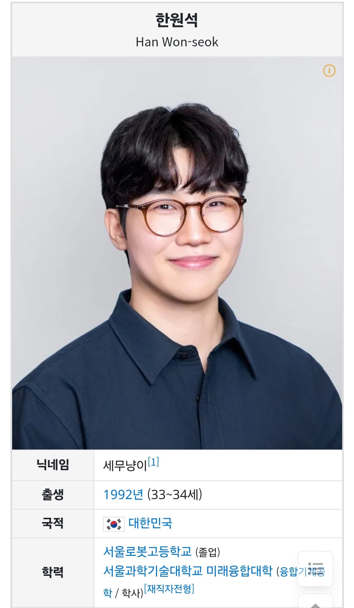

1. 부정행위 한 번만 함
2. 변호사 찾아감
3. 주작 방법 다 까발리고 다크나이트 역할 함
4. 잠적해서 사람 여럿 피곤하게 하는 행위를 안 함

1. 부정행위 한 번만 함
2. 변호사 찾아감
3. 주작 방법 다 까발리고 다크나이트 역할 함
4. 잠적해서 사람 여럿 피곤하게 하는 행위를 안 함
적어도 버스자위는 안했잖아
뭐 잘못했으면 걍 시원하게 인정하고 사과 박는게
그나마 가장 덜 꼬라박는 방법인듯
근데 그냥 나쁜 짓은 애초에 최대한 안하는게 최선임
비교대상이 어나더 클래스라 상대적으로 선녀일 수밖에 없긴 함 ㅋ
어떻게 보면 세무냥이는 리트냥이 때문에 이미지가 그나마 살짝은 회복된느낌..
'그래도 리트냥이에 비하면 세무냥이는 완전 개XX는 아니었다' 뭐 이런느낌이라 ㅋㅋㅋㅋㅋㅋㅋㅋㅋㅋ
그래도 사과영상 바로 올리고 도게자정도는 박았잖아 ㅋㅋㅋㅋㅋㅋ
얘는 어떻게보면 이돈호가 살린거 아니냐?
정황상 고소한다고 변호사 선임했을 때만 해도 끝까지 밀고나가려고 하다가
갑자기 자수하는거보고 변호사가 이거 각 안나온다고 설득했나 싶던데
리트냥이는 변호사도 믿을 수 없고 혼자 버텨보겠다고 거짓말로 질질 끌다가 수습할 선을 지나버린거 같음
이것도 일리있네
자기가 해놓은 말들이 있어서 리트냥이처럼 계속 무르지도 못하고 돌파하려고 했을수도있는데
원래 변호사 일이 무조건 무죄를 만드는게 아니라 죄를 최대한 합리적으로 경감시켜주는거임 당연한거임 설득은 했겠지
그런데 변호사가 살렸다기보다는 세무냥이 변호사를 잘 고르고 빠르게 판단 잘 한거지
애초에 변호사는 의뢰인이 까라면 까는거임 설득이 주가 아님,
변호사 따라선 진실을 알아도 걍 밀어 붙이는거에 포커싱해서 변론 해주는 사람도 있음 패소해도 돈받고 알빠 아니거든
변호사 입장에선 각 재보니까 이건 승산이 없다는 판단하고 설득 하기야 했겠지만 최종 선택은 의뢰인 결정을 따름
솔직히 그대로 밀고 간다는 택지 고르면 역으로 변호사가 저사람 욕한 애들 싹다 고소 먹이는 수순이 될텐데
변호사도 이건 좀 아닌거 같은데 자기 이름 걸고 그짓하고 싶겠음? ㅋ
물론 그런 택지 골랐다면 걍 저 변호사도 이사건 손 땟을거 같음
세무냥이 스스로 자수한 선택에 대해서는 나름 합리적 선택을 한거라고 봄 죄 경감도 받을테니까
사업도 해봤다는 사람이 이런 판단 내릴수 있을정도면 열심히 노력했더라면 그냥 먹고살만하게 살았을텐데 말이지
이미 저질러져버린 상황에서는 최선의 대처였던 것 같긴 해
세무냥이 사건으로 파급력이 커진건 맞는데 그렇다고 다크나이트 취급은 좀..
ㄹㅇ 올려치기할 이유가 없음
이건 자수+수사협조 대가로 형량 깎아줘야한다고 생각함
냄새나고 질척거리는 설사보단 일반적으로 바나나처럼 나온 똥이 건강에 좋긴 해.
킹 갓 냥 이
로봇고에 서울과기대면 원래부터 머리도 나쁘지 않은거 같은데
자수하고 사과한것만해도 잘한거지
솔찍히 먹고살기힘들고 자존감없는때 그런 유혹에 안넘어갈놈 몇명이나 되냐?
저 병신들 빼고 다?? 뭔 저새끼 올려치기를 하고 있냐
도파민이 없자나
회계사 시험도 그런거아님?
리트는 그냥 돈 여럿걸린 범죄마인드였고 얘는 그냥 부정행위 하는사람중 1명이었는데 너무 판을 크게한느낌
리트야 미안하고 고맙다